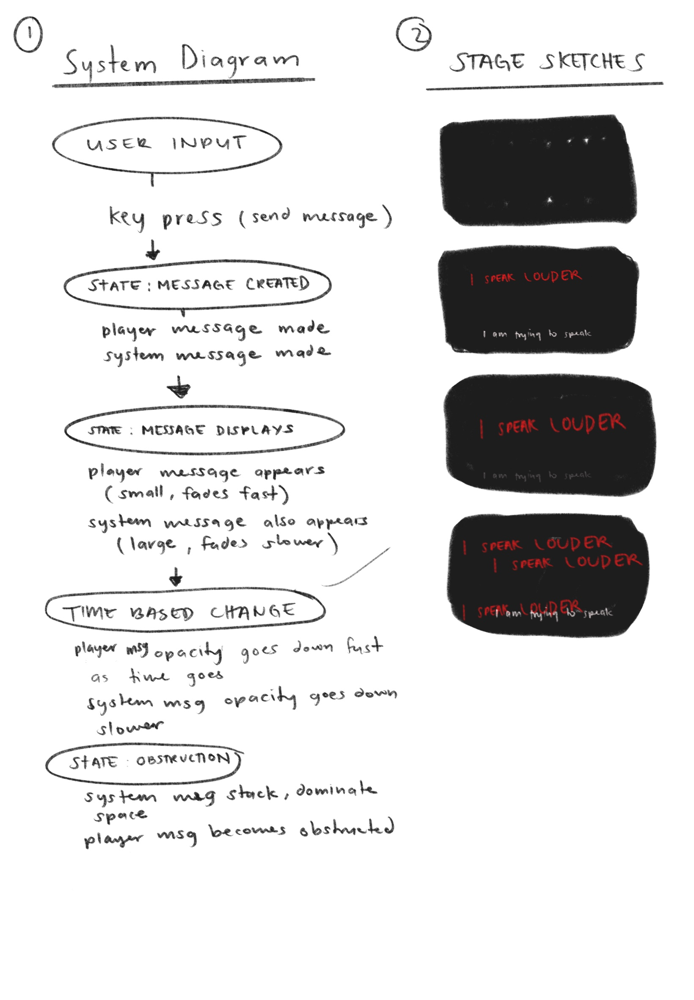

System Sketches
Here are some sketches of the system architecture and design:

Written Clarification
Rule of the System
Every user input generates two outputs: a player message and a system message.
However, the system enforces unequal visibility.
The player messages fade quickly and remain small, while system messages remain visible longer and dominate the screen.
Changes Over Time
Player messages decay quicker than system messages, leading to a growing imbalance in visibility. System messages also accumulate, creating a cluttered overpowering presence.
The ratio of visible system vs player messages grows over time, where the system messages become more dominant and player messages become increasingly invisible. This creates a feedback loop where the user feels less control and more frustration as their inputs are overshadowed by the system's responses.
Time inequality: Different fade rates create imbalance
Persistence gap: System messages remain longer while player messages vanish quicker
Spatial dominance: System messages occupy more screen space over time, supressing player message.
Why This Idea Is Worth Developing
I wanted to explore the idea of inequality and opression through a simple interactive system where the user experiences it firsthand where the user can feel the frustration and powerlessness of being overshadowed by a dominant system. Later on I want to expand on this idea by making it so that eventually the player can overcome the dominant voices around it and feel heard and empowered through persistence despite the growing adversary the system continues to show.